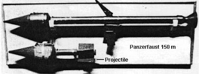

Vanderboegh: Improvised Munitions, Inc.

Improvised Munitions, Inc.
by Mike Vanderboegh
(Another chapter of "Absolved", an upcoming novella)
“Decency,
security and liberty alike demand that government officials shall be
subject to the rules of conduct that are commands to the citizen. In a
government of laws, existence of government will be imperiled if it
fails to observe the law scrupulously. Our government is the potent,
omnipresent teacher. For good or ill, it teaches the whole people by
example. Crime is contagious. If the government becomes a lawbreaker,
it breeds contempt for the law. It invites every man to become a law
unto himself. It invites anarchy.” -- Justice Louis Brandeis, dissenting in the case of US v. Olmstead, 277 U.S. 438 (1928).
16 November, Three Weeks after the Battle of Sipsey Street: Feds
Transcript, telephone conversation, 205-(redacted) to 205-(redacted), 16 November, 2007HRS EST
Reference FBI Form 302, Special Agent Robert A. Starkey, Birmingham Field Office, 18 November 2005
“Chuck?”
“Yeah.”
“We’ll need to rent the hunting club this weekend. Any problem?”
“No, shouldn’t be. Saturday or Sunday?”
“Sunday, late afternoon.”
“Sure, bring it on.”
“Right, see you then.”
“Later, buddy.”
REDACTED
Pursuant
to confidential informant (CI# REDACTED) subject (REDACTED) and subject
(REDACTED) were believed to be testing improvised ordnance at property
owned by (REDACTED) at (REDACTED), (REDACTED) County, Alabama. CI
(REDACTED) indicated that ordnance to be tested included rifle-projected
shaped charges and improvised antitank weapon similar to World War II
vintage Panzerfaust. Drone surveillance was approved by (REDACTED).
(Next four paragraphs redacted.)
Although
drone was over target area from 1200 HRS to 2100 HRS, the results of
drone surveillance were negative with no illegal activity observed.
(NEXT three paragraphs redacted.)
Subsequent
interviews with neighbors (REDACTED) of (REDACTED) and (REDACTED) of
(REDACTED) indicated that they heard explosions in the distance early
Saturday morning that seemed to be coming from (REDACTED). From these
statements it was concluded that the arrangements by phone were
deliberately deceptive as to time in case of intercept. Thus late
Sunday meant early Saturday.
SNP authorized by (REDACTED) after contact with (REDACTED).
(Justice Department note in margin: “No warrant for sneak and peak. PATRIOT Act?”)
SNP results reported by (REDACTED).
(Next two paragraphs redacted.)
Forensic
tests on metal and plastic fragments picked up by (REDACTED) at
(REDACTED) were inconclusive, perhaps because of rain which fell in the
intervening time. Recommend (REDACTED).
(Next four paragraphs redacted.)
Signed,
Special Agent Robert A. Starkey
(Editor's Note: Above material excerpted from discovery material provided in re US vs. Mueller, et al.)
4 November: The Grenadier & the Arsenal of Republicanism
The
workshop was scattered with manuals. Other than the strange smells,
that was the first thing you noticed. Some were open, face up, others
face down.
Some had obviously come from the military. There was
FM 9-13, "Ammunition Handbook", and TM 31-210, "Improvised Munitions
Handbook". There were even reprints of very old manuals such as "The
Ordnance Manual for the Use of the Officers of the United States Army,
Third Edition", dated 1862 and H.L. Scott’s "Military Dictionary", first
printed in 1861.
Then there were manuals of civilian provenance, mostly printed by that most notorious of publishing houses, Paladin Press. There were titles like "Home Workshop Guns for Defense and Resistance", Truby and Minnery’s
two-volume set of "Improvised Modified Firearms", and that staple of
the ‘90s citizen militias, Ragnar Benson’s "David’s Tool Kit: A
Citizen’s Guide to Taking Out Big Brother’s Heavy Weapons". On the
shelves above the work table were classics such as Tenney
Davis’s 1943 work, "The Chemistry of Powder and Explosives", Bert
Levy’s "Guerrilla Warfare", Col. John George’s "Shots Fired in Anger", von Dach
Bern’s "Total Resistance", DuPont’s "Blaster’s Handbook", and several
different editions of "Small Arms of the World", interspersed with
reloading manuals and back issues of Shotgun News.
At
the moment, there were two manuals face up on the work bench -
"Evaluation of Improvised Shaped Charges" by Anonymous, published in
1980 by Desert Publications of Cornville, Arizona, and "Improvised Rifle Grenades" by the aptly named expert, “Powder Burns”.
Mark
“Kraut” Mueller was 52 years old, old enough to know better than to
play around with improvised munitions. The fact that he had quietly
enjoyed this hobby since 1968 when he first got access to serious
chemicals after his sophomore science teacher picked him as a lab
assistant was known to a very few people. The fact that the FBI knew it
as well would not have concerned Mueller very much. He had been very
careful over the years not to cross the line of criminal conspiracy, and
prior to this day had been more interested in preserving his knowledge
and ability to build improvised explosive devices than in actually
making them. It was a skill that he always held back UNTIL.
Well, now “until” had come.
Of that he was certain.
This
was where the design for Phil Gordon's improvised anti-personnel rifle
grenades had come from. Mark Mueller had know Phil for years. Although
he couldn't rank him as a friend, they certainly had been friendly.
Both had fought as allies in the legislative gun control wars in Alabama
over the years. Phil was never shy about what he thought of the ATF, which is probably why they had come to take him that night.
About a week before the battle, Phil had come to see Kraut at his house.
"I
need to ask a favor," he had begun. It was a big favor, and it involved
a huge leap of faith and trust for Mark Mueller. He had taken it.
Still,
if the Feds knew that he had given Phil his design, they would have
come for him already. So Phil must have taken that secret to his grave.
How Phil put it together that he had been working on them was easy,
Mark now understood:
"Hell, Mark, I've been knowing you for
fifteen nigh onto twenty years and for half that time you've been
beating the drum for that damn Alabama Grenadier Society y'all go play
with dummies at. I just figured that if I hadn't been so damn cautious
all these years, that might be something I would have done. It don't
take Sherlock Holmes."
Mark hadn't perfected the anti-tank grenade yet, but he had given Phil the plans for the anti-personnel grenade.
Phil had done the rest himself.
Truth be told, Mark hadn’t actually tested a device in almost ten years, after Waco and the gun bans had convinced him that the Clintonistas
were finally going to try to pick up America’s guns. Then, as now,
Mark was the closest thing the Alabama Constitutional Militia had to an
ordnance officer. He had conducted many discreet training sessions,
always SHOWING how but never DOING. He had demonstrated everything from
the utility of dummy rifle grenades in training to how to manufacture a
thermite device to take out an M1 Abrams tank. He had worked up a 12 Gauge flechette load that could reliably penetrate an ATF
raid vest of the Nineties at twenty meters and then publicized it so
that not only would the various citizen’s militias know how to make them
but the “gun gestapo” would know that they were more vulnerable than
before.
Anything that slowed down the people who had started the
Waco atrocity and made them more cautious was a positive social good as
far as Kraut Mueller was concerned.
For this and other sins, Mark was not popular with the ATF,
nor did the FBI like him either. Both agencies had tried to entrap him
over the years with a variety of scams and provocations, most of them
unimaginative if not stupid. Mueller had evaded them all, and for a
fellow of his political stripe that was saying something.
The
Feds always had a theory that a gun enthusiast with political opinions
was just this side of a terrorist, and the Clinton administration made
sure that their FBI stooges kept close track of militia folk. The irony
that the Fibbies spent so much time spying on the militias that they let the September 11 conspiracy get past them was not lost on Kraut.
What morons.
Most of them weren’t
evil characters, of course. They were just federal bureaucrats working
toward retirement. Of course some of them fit Hannah Arendt’s definition of the “banality of evil” - Jim Cavanaugh of the ATF,
for one. But for the most part they were guys who joined after a stint
in the military or the local cops and who thought they could do some
good fighting bad guys. When an administration took over that defined
bad guys as anybody with a gun who didn’t hew to the administration political line - well, the agents weren’t in an easy position to say differently. Even if they thought the Clintons were borderline treasonable (and many did), they weren’t about to jeopardize their retirement pay.
Oh,
some of them resigned out of principle, but darn few. Mostly they
turned into the guys who, when ordered to do something patently
unconstitutional like the Waco raid, saluted and put on their raid gear.
You know, the same kind of “decent Germans who just followed orders”
that we hung at Nuremberg for war crimes.
Meet them in a bar, and
you could get to like them. But if they came to your door, you’d
better be prepared to take their lives. Because they showed at Waco and
Ruby Ridge, and now at the Battle of Sipsey
Street, that they were ready to take yours. Not only that, but they'd
kill your wife and kids as well and be unapologetic and unrepentant
afterwards. And as far as Mueller understood, “Waco Rules” were still
the way the Feds ran things. If Sipsey Street proved anything, it proved that, even if the Feds had gotten more than they bargained for.
Of course, since that was the way Mark viewed things (and he hadn’t
been shy about sharing his opinions with the Feds) no one ever came to
his door, at least until now. While that might be because the Feds couldn’t make a case on him, Mark didn’t
think so. They’d framed others before and got away with it. The
federal prisons were still populated with so-called “militia leaders” of
the Nineties who’d been talked into one piece of tomfoolery or another,
or at least the federal prosecutors had made juries believe that they
had.
But Kraut was of the opinion that the reason he’d never been
raided was because he had made it plain that Waco Rules were still in
force and that he would kill as many Feds as he could before he went
down. No federal prison for Mrs. Mueller's son, that was for sure.
Kraut knew the Feds could kill him any day they decided it was worth it,
but he’d made it plain to them it had better be worth the chance of
them not living to collect their retirement. And Kraut knew, as did the
Fibbies, that he had enough friends to collect the butcher’s bill if he could not.
So far, his own private policy of “mutual assured destruction” had kept him alive.
So far.
But after Sipsey Street, Mark Mueller was sure, the dynamic had changed. The gloves were off now.
Phil Gordon's spectacular resistance had changed everything.
The work shop was in the windowless basement of a business establishment owned by a good friend, a fellow who wasn’t
associated with the militia in any public way. In fact, there were
perhaps three people in the whole world who knew of the workshop’s
existence. There was only one access door to the stairs from the
inside, and it was both steel and triple locked. You could only get to
the door by passing through the private office of the owner, which,
because he handled lots of cash in an average business day, was equally
secured with alarms, steel doors, controlled access and bulletproof
windows.
In fact, the building had been constructed just four
years ago with just this dual-purpose in mind. The hard-working owner
was one of the few patriots Mark knew who had money to burn, for most of
the other militiamen and women were poor as church mice. In the shop,
Mueller could feel as secure from prying eyes as in one of the unit’s
supply dump caves up in Blount, St. Clair or Winston counties. And that was good, because you didn’t need to be nervous when playing around with improvised explosive devices, particularly the kind Kraut was about to fabricate.
“Rifle
grenades are the Marine rifleman’s best weapons for use against tanks,
pill boxes and, in some cases, enemy personnel. They are also effective
as signaling agents, for screening effect, and as an incendiary against
inflammable targets. They are similar to hand grenades, but have
greater range since they are fired from the muzzle of the rifle by use
of a special blank cartridge. Certain types are much more powerful than
hand grenades… Rifle grenades are versatile weapons and can perform
many jobs if the right grenade is used for the particular task at hand.
They may be fired singly or in groups, at low or high angle, and they
can cover the dead space between the distance you can throw a hand
grenade and the minimum range of mortar and artillery fire.”
Or so said the"Guidebook for Marines", May 1966 edition, anyway.
In
any case, for his purposes, Kraut was already sold on the military
utility of rifle grenades. It helped that he and his friends really had
few other choices.
By the turn of the 21st Century, rifle grenades were considered passé
by just about every military establishment on the planet, except
Israel. The United States Army had dropped them from the inventory
toward the end of the Vietnam War in favor of a 40mm grenade launcher,
first the M79, then the M203. The M203, slung on the underside of an
M16 series rifle, was still standard issue and Mark’s son Mike, a clerk
in the 101st Airborne Division’s headquarters had used one in Iraq on
convoy duty. At ranges farther than the M203, the Army used mortars,
anti-armor rockets, artillery or direct-fire cannon to suppress their
enemies’ fire.
However, the militia had no mortars, anti-armor
rockets, artillery or direct-fire cannon. These were forbidden to them
by federal law as “destructive devices.” Nor could any of those weapons
they be easily fabricated by small workshops like the one Mueller was
sitting in.
But what the militia did have a lot of were rifles--
bolt action and semiautomatic rifles. And some of those rifles had
military spec flash hiders on them that doubled as rifle grenade
launchers.
There were rifles chambered in 7.62 NATO (called .308 or three-oh-eight by civilians) like the Spanish FR-8, the Belgian FAL, the German Heckler & Koch HK91 and the French MAS 49-56. There was also a variant of the Soviet SKS
rifle chambered in 7.62x39 made by the Yugoslavians that was set up for
launching NATO specification rifle grenades, courtesy of Tito's little
falling out with Stalin. At the moment, these were selling for less
than $200.00 each.
Both the SKS and the MAS 49-56 had the advantage of having integral grenade sights.
There were also rifles that could be fitted with grenade launching attachments like the venerable Springfield 1903 and the M1 Garand of WWII issue - both chambered in .30-06 - or the civilian semiautomatic version of the US M14 rifle chambered in 7.62 NATO.
So there were plenty of grenade-launching platforms in militia hands.
It
was also legal to own such a rifle (for the moment anyway) and you
could go out to a range, a pasture or an old strip mine and launch
grenades, as long as they were inert practice grenades.
"The beauty of the rifle grenade," wrote one military advocate on the Internet, "is
you can train on them anywhere there is an open space to shoot. You
simply take practice rifle grenades and launch them with low-cost blanks
at your targets to perfect your aim. After shooting them, you go down
range, pick them up and shoot them again. And again. 'Practice makes
perfect' is the by-word for a can-do generation that doesn't wear
t-shirts with slacker mottoes like 'If you can't win don't try.'
Perfect aim allows you to hit bad guys in moving cars when the chips are
down and lives are on the line."
The grenades were projected
from the rifle by means of a special grenade launching blank, and
Mueller's militia unit had been manufacturing such blanks for years,
using a special star crimp die that had cost more money than Kraut
cared to remember.
Mark had the charge data for 7.62 NATO grenade blank taken from the 7th edition of Cartridges of the World posted above his reloading table across the room. In bold black letters it read:
"For the M64 Grenade Launching Blank (7.62mm NATO):
HPC4 @ 37 grs. or IMR8097 @ 40 grs. or WC830 @ 45 grs.
Source:TM43-0001-27"
That was if you could find it. The grenades got lost as often as not unless you tied a three foot long piece of fluorescent engineer's tape to the tail and stationed a spotter out in the impact zone. So between militia training usage and the fact that no M31s had been made since the Sixties, that well was about dry. They were still available if you looked real hard, but the price was exorbitant.
This was unfortunate for improvised munitioneers like Kraut because the M31 lent itself to reactivation, especially because the shape and composition of the training round was perfect for the shaped charge necessary to be an effective antitank round. Powder Burns' book, "Improvised Rifle Grenades", was a tutorial on rearming an M31 with a shaped charge of home-made C4.
The shaped charge principle had first been discovered in 1888 by Charles Edward Munroe, a professor of chemistry at the U.S. Naval Academy. While working at the Naval Torpedo Station at Newport, Munroe found that that if a block of guncotton with letters countersunk into its surface is detonated with the lettered surface against a steel plate, the letters are indented into the surface of the steel. Likewise, if the letters are raised above the surface of the guncotton, by detonation they are reproduced in relief on the steel plate, embossed and raised above the neighboring surface.
In other words, the greatest effects are produced on the steel plate at the points where the explosive material stands away from it, at precisely where explosive waves from different directions meet and reinforce each other. Munroe found that by increasing the depth of the concavity in the explosive he was able to produce greater and greater effects on the plate until with a charge which was hollowed out all the way, he was able to punch a hole completely through the steel plate.
Later ordnance scientists would learn that the effects of the shaped charge was independent of velocity - that is, it was unimportant if the charge was laid next to the steel plate or fired into it at great speed. The important thing was that for any given size and shape of charge, there was an optimal point above the steel plate (called the stand-off) where the effects of charge were maximized.
In addition, it was critical to locate the detonator at the center of the rear of the charge, so as to focus the resulting explosion. Finally, the conical cavity at the front of the charge must, for maximum effect, be lined with a ductile metal like copper. When the explosive is detonated the liner is deformed into a high velocity molten metal jet which is capable of penetrating armor plate.
Minor changes in any of these three factors: stand-off, detonation point and liner make a great difference in the ability of a given charge to penetrate modern armor plate. While an unlined shaped charge would work, it was far less efficient for antitank work than a similar lined charge.
Phil Gordon's improvised rounds had been unlined.
Mark intended to line his.
Mueller studied the tables in "Evaluation of Improvised Shaped Charges", then put his micrometer on the sheets of copper, alloy and aluminum that he had been able to scrounge at the industrial surplus supply store on 41st Street in Birmingham. Mark jotted the measurements down in his journal. He would use all three in the prototypes to see which worked best.
Weight was also a critical consideration. Kraut had come to the conclusion that the M31 was going to be best for antitank purposes. But if the larger goal of a "universal fed discourager" was to be met, he would have to find a design that could be produced by anybody from the stocks at their local hardware or building supply store.
Kraut had about 500 inert M31s, new in the cardboard shipping tubes, stashed in a friend's barn up in Blount County, courtesy of a trade he'd made ten years ago with an itinerant surplus dealer. "Shorty" Long had bought them for scrap price from the property disposal office at Anniston Army Depot sometime in the misty past and needed to get rid of them because he'd lost his storage area due to divorce.
His ex-wife got the kids, the furniture, the car and the house, he got the military surplus, the alimony, the child support and their three legged-dog. In retrospect, there was no doubt that his ex-wife, as ex-wives often do, got the better part of the deal. Still, Shorty clung to the comforting thought that the three-legged dog, which of course was named "Lucky", had a sweeter disposition than his ex-wife.
"Even if they were both bitches," he told Mark.
But just as the supply of M31s had pretty much run out, the Israelis came to the rescue. Earlier that year, Numrich Gun Parts Corporation of West Hurley, New York started advertising a new lot of Israeli Practice Grenade Sets for $140.00 each in gun industry magazines like Shotgun News.
The set contained six inert rifle grenade assemblies with rubber warheads patterned after the Israeli Military Industries BT/AT-44 dual purpose rifle grenade. These dummy grenades came with removable launching body tubes and tail fin assemblies so that if one piece were damaged in training, it could be repaired with a new part.
But that wasn't the beautiful thing about these Israeli grenades. The beautiful thing was that in addition to the six complete assemblies, the white wooden crate that Numrich shipped to you held 40 extra plastic fins and 32 launching body tubes.
And it was the launching tubes and fin assemblies that Kraut coveted.
Improvising a warhead, whether it is anti-personnel or anti-tank in design, is one thing. Mueller was already pretty good at that. But what was beyond Mark's abilities was a low-tech way to duplicate the intricacy of the fin assembly and the stout metallurgy and critical tolerances of the launching body tube. What the Israelis (through the good offices of Numrich Gun Parts Corporation) had provided was six training grenades and the makings of thirty-two more improvised rifle grenades. And Kraut figured that really was worth $140.00. Not to mention the fact that the six rubber dummy grenades were so stoutly designed and built that they hardly ever tore up in routine training. Compared to the M31 sheetmetal dummies, the Israeli rubber grenades were indestructible.
Six months ago, when he first understood the potential of the Israeli kits, Mueller tapped his friends for enough money to buy ten of them. In the intervening weeks, Kraut had figured out how to adapt the fin and launching tube assemblies to common pipe fittings which enabled him to adapt them to any kind of warhead he could design. What he was doing now was putting all the elements together, including the explosive charges, into test prototypes.
By doing so, he was violating federal law. But the prototypes were merely to test the theory that effective rifle grenade warheads, both antipersonnel and antitank, could be manufactured in basement workshops. Kraut had no intention of mass-producing warheads at this point, even though he had the means to do so. He knew that with the help of a dozen militia members, he could arm all 500 of his M31s and 300+ of the Israeli hybrids in a week when and if he had to.
Now he merely wanted to test the designs so that, once proven, his manufacturing instructions could be circulated within the militia movement, much like his design for the 12 Gauge flechette load.
But after Sipsey Street this was no longer about trying to maintain credible deterrence. War, if it was not already here, was coming fast. That was what brought Kraut Mueller to this work bench.
The first problem was that the Israeli tubes were open at both ends, so the business end would have to be plugged. No problem there. Mark went to his local Lowes building supply store and found copper 1" pipe caps that with a bit of tapping with a large ball peen hammer could be driven down into the open end of the launching tube, swedged tight. Of course the friction fit would not hold against the overpressure on the inside of the tube upon launching, but Mueller had an idea about that too.
The second problem had been the threads on the Israeli launching tubes. Mark could find nothing locally to match them. They were about 1" O.D. so after perusing some plumbing industry websites he came up with a female to male adapter, the female end being smooth (designed for sweating onto copper pipe). The male end was 1" pipe thread making it easy to adapt whatever optimally sized warhead he might construct. The problem was with the sample he bought from Home Depot. While the smooth inner surface of the female end of the copper fitting would slide over the threaded end of the Israeli tube, it was loose and there was no way to self-thread the alloy tube into the fitting. That had been easy to fix. Mark found some thin aluminum shim material, bent it into round and slipped it over the tube before he tapped the female end of the fitting into place.
To solve the problem of holding both the cap and the fitting in place on the tube, Kraut drilled a 1/4" hole through the fitting, tube and cap and ran a bolt through the assembly, topping it with a locknut on the other side. Thus secured, the tube and cap would hold up to the stresses of firing. He had already tested that theory with a dummy warhead made out of 1-1/2" PVC pipe with a playdough filler. Fired off of a Chinese-clone M14S retrofitted with a USGI flash suppressor and an M76 launching attachment, the grenade had sailed almost 300 meters, landing nose down.
Perfect.
Mark now knew he had a projectile suitable for antipersonnel rounds, at least, and maybe antitank rounds as well. That was what he working on now. The base-detonating fuse arrangement was a proven type designed by a couple of East Texas militiamen back in the Nineties who had a flair for technical design. One of the two was tall and lanky, the other shorter and more compactly built, so Kraut had dubbed them "Mutt and Jeff."
The problem with all fuses is how to construct them so that they will be robust enough to stand up under the stresses of launch, yet sensitive enough to detonate their cargo on the other end. After studying many types of artillery fuses from the Civil War to the Nineties, the Texas boys had devised a mechanism small enough to fit in a projectile, robust enough to be safe to launch, and reliable enough to work on impact-- and all of the components were available at your local hardware store.
Their original design had been mated to an black powder burster/antipersonnel charge launched by twelve gauge shotgun using the old blank-shotgun-shell-and-broomstick arrangement first outlined in Che Guevara's book Guerrilla Warfare. Mark had been impressed when Mutt and Jeff had demonstrated it for him back in 1997 when he made a trip out to the Lone Star state. What really impressed him was not the reliable fuse, but the guts of the men who put the shotgun to their shoulders and touched off the infernal contraption.
Whenever Kraut tested a rifle grenade or rifle grenade launching platform, he lashed the rifle to an old tire and used a very, very long lanyard to touch it off. This procedure had saved Mark's life more than once. That Mutt and Jeff did not do this said something about either their cojones or their sanity, Mark wasn't sure which.
Mueller was now taking their design a step further by working it into the highest efficiency rifle-launched projectile able to be constructed by a basement workshop. First came the antipersonnel round. For this warhead, designed to throw shrapnel in every direction, it was better to move the fuse point of detonation into the center, rather than the base. Based on tests of varying size and weight, Mark had already calculated the best throw weight for the grenade. With this knowledge in hand, he found components which when assembled would match the optimum weight. Schedule 40 or Schedule 80 PVC was fine for a casing, light but reasonably strong.
Kraut had worked up a jig to hold an electric drill with the chuck extending above the table top of the work bench at a 90 degree angle. Into the drill chuck, he inserted an adjustable cup that would hold the PVC pipe and adapter base (already glued together using PVC cement). As the drill rotated the PVC warhead, Mark squeezed in glue until it was covering the inner wall completely with a thin layer. Then he would insert steel ball bearings, small nails, or some of the flechettes he had left over from the anti-ATF shotgun shell project. The centrifugal force of the rotating casing distributed the projectiles along the casing wall. Then in went more glue and more projectiles, always leaving room for the fuse mechanism and explosive charge. He had done this years before when working on improvised hand grenades, testing them inside a railroad culvert lined with plywood-backed poster board so he had been able to analyze the blast patterns. Steel ball bearings seemed to throw the most consistent pattern, regardless of whether he used black powder, aluminum flash powder or improvised C4 as a burster.
Over the past ten days, Mark had completed all of the design work and prefabrication of components necessary to make 2 grenades of each type he wished to test. There were antitank grenades of differing sizes and liners, 3 on the M31 platform (each with a different composition liner) and 9 different Israelis, antipersonnel and antitank.
What the militia ordnance man was doing now was the assembling of the final product, including loading in the C4 and arming the East Texas detonators. He worked slowly and carefully, stopping often to get up and stretch. He was sweating despite the coolness of the basement and every so often would mop his face with an old dish towel.
Eight and a half hours after he began, the last of the improvised rifle grenades was nestled in its cardboard shipping tube, six tubes to a backpack. The backpacks were made of Realtree camouflage pattern of the type some hunters use, and Kraut had picked them for a steal when the local Service Merchandise had gone out of business years ago. Mueller was always bringing odd items home, stuff that had no apparent earthly purpose as far as his wife could see and no virtue other than it was dirt cheap.
Millie had long ago ceased asking, figuring that there were other husbands with stranger hobbies and worse vices. And while she agreed with Kraut's politics (she was from Arkansas after all, and no one had despised Clinton more then she), Mueller figured he probably wouldn't tell her EVERYTHING about what he had been up to this day. Ignorance may not be bliss, but it sure can be functional occasionally in a marriage. Especially when your husband was up to what Kraut was up to. Mueller smiled, and wiped the sweat from his face and hands once more.
There were other projects he was working on, of course. The improvised rifle grenade project he had dubbed "Project R". It was the first to come to fruition because it was the easiest to accomplish. His friend Bob was working on a related project, dubbed "P," in a remote farm machine shop in Shelby County. Because it also involved shaped charges, most of what Kraut learned with P would be applied to R. Bob was working on the launcher even now and he did not need the warhead to accomplish that. When both R and P were finished, they would devote all their energies to the most ambitious of their plans, "Project M."
7 November: Panzerfaust
"Show me what you've got," said Kraut.
Bob Smith smiled craftily, his dark eyes glittering, showing some of his Korean ancestry, and he flipped back the lid of the long, surplus Israeli rocket crate that rested on the folding table in the farm shop.
"OK," he began by pulling the smaller of the three tubes out of the crate, "this is the original Panzerfaust 100 we got from Mike when he was in Germany. I still can't believe you can buy this stuff at flea markets over there," he said shaking his head. "Yeah, I know it doesn't have a warhead, but STILL . . ." His voice trailed off, then he continued.
"I'm going to recap a little because it bears on some of the changes I made in the design. As you know we chose the Panzerfaust because it doesn't require the complex chemistry and safety issues involved in making rocket fuel like the bazooka, just black powder as a propellant. Because of that, of course, the tube must be much stronger. The 100 was a step above the older, smaller Panzerfausts, with a new firing tube with a two-stage propellant charge that weighed 190 grams or 6.7 oz. This gave it a projectile speed of about 60 meters per second, that's about 200 feet per second and a range of 100 meters, hence the designation. The 100 was pretty much the last Panzerfaust that made it into the hands of troops in any numbers, showing up first about the time of the Battle of the Bulge. The tube length on this specimen is 110 cm, which strangely splits the difference between the two lengths I've found in the books. It's got a tube diameter of 60 mm just like our early bazooka. That's 2.36 inches. With the original projectile this weapon weighed about 7 kilos, or between 15 to 16 pounds. You can see the sights are creviced for ranges of 30, 60, 80 and 150 meters and those flakes are what's left of the glow-paint night sights. That last 150 meter notch is real optimistic even with 7 ounces of blackpowder throwing it. Here you can see the arming and firing system with the lever that also serves as the rear sight. This was an improvement over the earlier Panzerfausts."
Laying down the original German tube and extracting the second one from the case, he placed it beside the first. Smith continued. "Now here is our direct replica of the original sample."
"Wow," Kraut Mueller burst out, "They're identical!"
"Not quite," demurred Smith.
"You can see the differences here," he pointed, "here, and here. But all in all they are perfect to sell to World War II Wehrmacht and Waffen SS re-enactors along with an originally-shaped blunt hardwood projectile painted to look like metal. The projectile's inert and they're black powder, so they're not covered under any of the Feds crappy laws, yet. Until the ATF decides to shut down that hobby, we can sell them all day long and plow the profits back into making these."


Bob Smith reached into the case and pulled out the last tube.
"OK, this is a hybrid of what I learned by studying the Panzerfaust 100 and the documents that you gave me from the War Department ordnance studies done after World War II. Basically, its a combination of features from the Panzerfaust 150 and 250 (which never got fielded) with the same tube as the 100, but reinforced with bands of steel strapping here, here, here, and here. These reinforcements ought to make the thing reusable for at least ten shots. Like the original 150, we can increase the length of the projectile and the amount of black powder increments to give you more efficient flight, speed and accuracy than the original along with a much heavier charge which will punch more armor. You will also note that we have replaced the cumbersome and hard to duplicate arming and firing system with the RPG style firing handle that the Germans finally got around to putting on the Panzerfaust 250."
When Bob halted his spiel to take a breath, Mark asked the younger man, "Why the reinforcements? Why not use a bigger tube? Seems like the reinforcements add to production time and cost."
Nodding, Smith answered, "We thought of that, but we couldn't lay our hands on seamless steel tubing of the proper dimensions. We also wanted to maintain a heavy projectile throw weight."
 "How heavy is that?" Mark asked.
"How heavy is that?" Mark asked.Bob told him.
"Damn! That's good!"
"Yeah, its a couple orders of magnitude better than what we can get with a rifle grenade thrown by an itty-bitty 7.62 NATO grenade blank."
Kraut Mueller's brain swam with the possibilities.
Bob Smith reached behind the box and pulled out a shorter but fatter object. "And here's a sample projectile we turned out with round bar stock, sheet metal and some hardware. You can see the cavity in the base for the secondary 'booster' charge of black powder, and the fabrication process facilitates loading the warhead."
He pulled off the hollow warhead shell with a simple twist. "All you've got to do is design a projectile that works, Herr Dok-tor."
They looked at each other and both burst out laughing.
"Ya done good, Bob," Mark Mueller said appreciatively. "When I had this hare-brained idea I didn't know if it would work or not. I mean the black powder solved the rocket fuel questions, but, darn, you really did it well."
Bob Smith continued to grin, "Well, if it doesn't work, you can take it out of my pay."
The machine shop rang with their laughter.
"Now all we gotta do," said Kraut Mueller as they both exited the shop, "is test the things."
"I'll let you shoot it first," said Bob.
"Reluctantly," he added.
"Thanks a bunch, Smith."
Kraut paused, still laughing.
"Thanks a whole bunch."
18 November: "Hide yer Wimmin, Clinton's in Town!"
FBI - Office of the Special Agent in Charge
Birmingham, AL
2:47 P.M Central Standard Time.
"So what you're saying is this militia guy has operational rifle grenades and anti-tank weapons and despite constant surveillance which he's slipped past at least three times we can't figure out where he's hiding them? Or where he makes them?"
The SAC was not pleased. Not pleased at all.
"Hell, he's a damned old fat man who has congestive heart failure and limps with a cane. My toddler could outrun him. What's wrong with you people?"
The ASAC and the three field agents in the room looked uncomfortable and none of them met the SAC's gaze. Two of them looked at the floor and one looked out the window. The fourth stared at a point at least six feet above the SAC's head.
The ASAC cleared his throat. "In fairness to the agents here, sir, this man is no ordinary person of interest. He knows fieldcraft. I called up Barney Williams, you remember sir, the special agent who retired just after you came here."
The SAC's face betrayed neither emotion nor understanding.
"Anyway, sir, he said they had the same trouble when they were trying to trail him back in the Clinton years. Barney said the guy drove like a bank getaway man and had a great many friends to help him with diversions when he needed them. He's got the electronics to scan for the latest bugs and he's very, very careful about his communications. He seems to communicate through both dead and live drops all over the place, but we can't catch him at it. If it weren't for the Confidential Informant, we wouldn't have known about the testing at all."
The ASAC ran down like a wind-up toy, waiting for the SAC to buy, or reject, his excuse.
The SAC said nothing, staring very intently at a pencil on his desk.
The ASAC ventured another factoid. "Sir, Williams also said that this guy suckered both us and the ATF in the Nineties. He would pretend to discuss illegal stuff on the phone just to sucker us into wasting our time chasing Tinkerbelles through NeverNever Land. Barney said he suckered the ATF into firing the company that cleaned the building because he convinced them in a wiretap that janitors were going to put brown recluse spiders in the raid gear in their lockers to bite their dicks and make them fall off."
Two of the field agents snickered.
The SAC looked up. "You're shitting me," he said flatly.
"No sir, I said the same thing and Barney swore it was true."
The SAC went back to looking at his pencil. "Fieldcraft? Where did he learn that, do we know?"
"No sir, he was a commie back in the 70s when he was young -- a secret member of a Maoist party, the Progressive Labor faction or something. Maybe he learned it then."
The SAC deigned to look up again, "A communist? What kind of sense does that make?"
"Sir, he had some sort of epiphany right afterward. He converted to Christianity and turned hard right and has been there ever since. It's in his file, he's not shy of talking about it."
The SAC seemed to see the file in front of him for the very first time. It was a thick one, he noted, a very thick one. He flipped it open and an old polaroid clipped to the inside front flew off and landed at the edge of his desk top. Reaching out, he retreived it and saw a portly middle aged man standing, no, posing, by the tailgate of his pick-up truck. A huge sign covered it, and the man was smiling broadly.
"What the hell?"
The ASAC, who was familiar with the file, interjected, "Sir, that was taken in the late Nineties when the President came to Birmingham to tour the tornado damage west of town. The Secret Service actually stopped him on the street and asked to take a picture of him and his pick-up truck. They took several polaroids and we asked for one, according to the notes. As I said, he has a sense of humor. I think the Secret Service guys did too. They didn't much care for guarding that President and his wife."
"Yes," said the SAC, "I was alive in the Nineties, Mr. Baird." He shook his head and chuckled in spite of himself.
The sign said, in huge letters, "Hide Yer Wimmin, Clinton's In Town!"
"So," the SAC concluded, "We have a dangerous, funny old fat man who's dying of congestive heart failure but not fast enough to suit the new administration. A man who has a gift for blarney and who may or may not have destructive devices capable of blowing up vehicles and small buildings?"
"Yes, sir," agreed the ASAC, "that's about it."
"Could he be working the CI back on us to make us do something stupid?"
The ASAC thought for a moment. "Yes, sir, he could be."
"And are we certain of the CI? What are his motives? Is he being paid? Is he being paid enough? Enough not to double-agent on us?"
The ASAC didn't know and didn't want to admit that he didn't know. The control agent was meeting with the CI right now.
"Sir, I . . ."
"Well, find out, dammit. The ATF's on me to let them have him as part of some big deal case they're working, as if screwing up the Gordon thing wasn't enough they think they got to take on this guy and his considerable number of friends. But the Hoover Building says no. Not just no, but hell no. There's something about this particular guy that they want us to handle. OK, so handle it, Mr. Baird!"
He looked around the room, "And you clowns better not lose him again."
They all mumbled yes, sirs, and turned to leave. "And Baird," he added.
"Yes sir?"
"I want a full briefing on that CI before I go home today."
"Yes, sir," the ASAC said as he closed the door on the way out.
The SAC shifted his gaze to the window and the world outside.
"Shit," he muttered.
What was so special about this guy that the Director was personally interested in keeping him out of the hands of the ATF?
He didn't know, but he intended to find out.
posted by Concerned American | 3:41 AM


{kind=link}
{kind=link}
{kind=link}
9 Comments:
Solid rockets aren't as big of a deal as you might think. I've found this interesting reading, as I'm building a story along similar lines. Of course, I can't help but try to fit in the Second Coming, Furries, and aliens and spaceships. It'll be fun though.
PET tubing is a high density, highly crosslinked polyethylene similar to Spectra Shield. Could your characters make bullet trap grenades by splitting PET, cutting out discs and loading a stack of discs into the grenade's tail?
Michael Gilson said: "PET tubing is a high density, highly crosslinked polyethylene similar to Spectra Shield. Could your characters make bullet trap grenades by splitting PET, cutting out discs and loading a stack of discs into the grenade's tail?"
I don't know but I'm going to find out. That's the thing I love about the Internet, cross-pollinization of ideas makes for a hardier species. Thanks!
(N.B. It's even still legal to try to find out!) ;-)
Meant to say PEX tubing, not PET. Checked at my local home store today. The largest size commonly available is 1 inch inner diameter and appears to have a wall thickness of around 1/8th inch. Larger sizes can be special ordered, but 1 inch when split and flattened would be just over 3 inches wide which should be plenty. It might need ironing or be run through a pants press to flatten the curve.
If PEX works for this it might also be useful for body armor - perhaps layered strips in the style of the Roman Lorica Segmenta or riveted to a cloth backing like medieval brigandine.
Japanese armor was designed to overlap, providing a double layer over most of the surface.
I've said before that with modern materials tech, we've come back around the circle to where armor can match the weapons of the day, much like plate and swords were before the gun came along. You could recreate the old knight anew, an expensive suit of armor that can stop just about anything man-portable, possibly even blast to some extent. This would take you back to the question of how heavy the armor gets, and how heavy the gun has to be, and which one is easier/lighter/more effective?
Dragon Skin
http://en.wikipedia.org/wiki/Dragon_Skin_body_armor
A full military tac vest with this stuff is a bit heavy, I've worn one. But it's not as heavy as steel or ceramic plate and has better coverage.
It will stop a rifle round and is available to civilians.
I know this comment is coming several months after the others, but I felt a correction was needed.
Dragon Skin is not available for civilian purchase. They will sell it to contractors who work for a security company, such as Blackwater, or any other.
But, Pinnacle Armor will not sell Dragon Skin to regular civilians such as myself.
Trauma plates are also good for reinforcing vehicles from small-arms fire.
The engine, the cab, the fuel tank, and the trailers, if you are working with trucks require the most vital attention.
Plates used on vehicles can be attached using samurai style overlapping for greatest effectiveness against anything up to a .338 Lapua, and they don't contribute that much to the vehicle's gross weight, as compared to Chobham or other style of professional armor.
Look the formula for Rocket Candy up on line. It can be used to launch a rocket very high, I think it would also be good for a RPG round.
If you can get Potassium Nitrate, you can make it.
You could even make the Potassium Nitrate, as the directions for making it are also on line.
Post a Comment
Subscribe to Post Comments [Atom]
<< Home